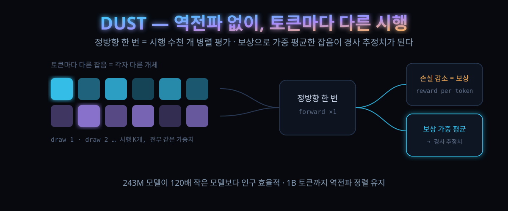

10/5 공개, 역전파 없이 사전학습 — 표 156·댓글 37로 붙은 '먼지'의 진짜 논쟁은 계산량 1,000배

결론부터. 역전파를 안 쓰는 학습이 트랜스포머 사전학습에서 역전파와 '비슷한 손실'까지 간 첫 사례이고, 그 대가는 시행 수를 수백~수만 배 늘리는 것이었다.
Q Labs가 10월 5일 공개한 'Dust(먼지)'는 가중치를 건드리지 않는다. 각 선형층의 출력, 즉 활성화에 가우시안 잡음을 섞고 그 변화가 토큰 손실을 얼마나 낮췄는지로 보상한 뒤, 시행을 평균해 경사 추정치를 만든다.
10월 5일(현지) 밤 해커뉴스에 올라 하루 만에 표 156·댓글 37을 모았다. 감탄은 소수였다. 다수는 같은 자리를 향했다 — '정확한 그래디언트를 정방향 천 번으로 어림하는 건데, 그게 언제 남는 장사냐'.
30초 요약
| 항목 | 내용 |
|---|---|
| 무슨 연구 | Q Labs의 'Dust' — 4인 저자(Samip Dahal 등), 2026년 10월 공개. 역전파를 쓰지 않는 0차(zeroth-order) 최적화로 트랜스포머 언어모델을 처음부터 사전학습 |
| 핵심 트릭 | 시행(개체)을 가중치가 아니라 토큰에 둔다. 토큰마다 다른 잡음 = 각자 다른 개체. 하나의 정방향 통과가 수천 개 시행을 병렬 평가 — 연구팀 표현대로 가중치 공간 ES보다 최소 세 자리 수 큰 인구를 한 번에 소화 |
| 역전파와 비교 | 10만·1M 토큰 예산에서 Dust가 역전파보다 낮은 테스트 손실(인구 수백~1,000부터). 20M 토큰에서는 격차가 인구 늘며 좁혀지고, 멱함수 외삽 한계값 4.431(95% 구간 3.89~4.58)이 역전파 4.633 아래 |
| 반전 | '큰 그물은 0차 방법 못 쓴다'는 통념과 반대로, 243M 모델이 120배 작은 2M 모델보다 인구 효율적으로 학습(10M 토큰 고정, 인구 256 이상) |
| 그래디언트 정렬 | 추정치와 실제 역전파 그래디언트의 코사인이 인구 늘며 상승, 10M~1B 토큰 체크포인트 전 구간에서 유지. EGGROLL은 같은 예산에서 0.05 미만 |
| 연구팀이 인정한 한계 | "오늘날 역전파를 대체할 만큼 계산 효율을 확보한 게 아니다"를 논문이 직접 명시. 실전 대체에는 자릿수 단위 효율 개선이 더 필요 |
1. 무엇이 터졌나
설정의 격부터 적어둔다. 이 실험은 대형 모델이 아니다. GPT 계열 트랜스포머, 4,096 토큰 BPE 토크나이저, 배치 16k 토큰(2,048 토큰 8개), 에포크 1, 관성 붙은 SGD에 상수 학습률. 기본 모델은 8층에 가로폭 512. 학습 데이터는 FineWeb. 모든 방법은 같은 규정으로 3시드, 예산·인구마다 각각 튜닝했고, 보고 값은 검증 집 최우 체크포인트의 테스트 손실이다.
비교 상대는 두 축이다. 하나는 역전파 — 같은 격자에서 직접 튜닝한 기준선이다. 다른 하나는 EGGROLL. 저차 가중치 섭동으로 대형 인구를 GPU에 얹는 최신 ES(진화 전략) 방법인데, 같은 아키텍처로 재현해 'EGGROLL-트랜스포머'로 붙였다.
그리고 결과가 숫자로 나왔다. 토큰 예산 100K에서 Dust는 인구 수백 시행부터, 1M에서 인구 1,000부터 역전파 아래로 내려갔다. 10M에서는 사다리가 평탄해지고 그 외삽 한계가 역전파 바로 위. 20M에서는 인구 16,000까지 계속 떨어지는데, 멱함수 맞힘이 놓은 한계값 4.431(부트스트랩 95% 구간 3.89~4.58)이 역전파 4.633보다 낮다. 연구팀은 이 문단에 스스로 단서를 달았다 — 사다리가 아직 내리막이라 이 값은 '측정된 한도'가 아니라 '격차가 인구에 따라 계속 좁혀진다는 증거'로 읽어야 한다.
Adam에서도 형태는 유지됐다. 1M 토큰 사다리를 세 방법 모두 Adam으로 다시 돌렸을 때 EGGROLL은 거의 이득을 못 본 반면 Dust와 역전파는 함께 개선됐고, Dust의 외삽 한계는 5.248(구간 5.17~5.30)로 역전파 5.361 아래를 가리켰다. 현대 옵티마이저가 역전파 그래디언트에 맞춰 공동진화했다는 점을 감안하면 만만치 않은 결과다.
2. 왜 대단한가
① 시행을 개체가 아니라 축으로 만든다
ES의 고질병은 인구다. 개체마다 가중치 사본과 정방향을 따로 내야 하니, 계산 예산이 곧 인구 상한이 된다. Dust는 이 제약을 옆으로 눕힌다. 잡음을 가중치가 아니라 활성화에, 그것도 토큰마다 독립적으로 거는 식이다. 그러면 한 문장의 수천 토큰이 수천 개 개체가 되고, 정방향 한 번이 그 전부를 함께 평가한다. 시행 하나가 완전 정방향보다 약간 싼 이유는 깨끗한 통과가 캐시되어 있고, l번째 블록을 흔들면 l 이후 블록만 재계산하면 되기 때문이다.
추정 규칙은 역전파와 거의 같은 자리에서 갈라진다. 각 토큰의 보상(그 토큰 손실 감소 + 감쇠 계수 γ로 묽힌 이후 토큰들)로 잡음을 가중 평균해 층 출력의 오차를 만들고, 그것을 층 입력과 외적해 가중치 경사 추정치를 얻는다. 역전파도 같은 외적을 쓴다 — 출력 오차를 체인 룰에서 꺼내느냐, 시행 집단에서 뽑느냐의 차이만 남는다. 토크나이저 임베딩은 입력이 원핫이라 외적이 곧 행 단위 scatter-add가 된다.
② 통념과 반대로, 큰 그물이 더 잘 낚인다
0차 방법이 대형 네트워크에 못 미친다는 상식은 수치적으로 정직하게 시험됐다. 파라미터 2M·7M·38M·243M(120배 폭)을 10M 토큰 고정으로 인구 64~16,000까지 돌린 격자에서, 인구 256 이상은 전부 2M→7M→38M 순으로 손실이 떨어지고 243M은 간신히 뒤처지는 정도였다. 인구 최소값에서도 120배 큰 모델이 대동소이하고, 그 외 구간에선 앞선다. 연구팀은 모델 크기를 '탐색 공간의 크기와 모양'으로 읽는다. 큰 그릇이 큰 인구를 받을 자리가 있고, 손실 지형의 조건수까지 좋아질 수 있다는 얘기다.
격자에서 한 가지가 더 보인다. 작은 모델은 일찍 평탄해지고 큰 모델은 인구를 더 먹는다. 인구 1,000을 넘으면 38M·243M은 2M·7M보다 약 30% 더 이득을 뽑고, 인구를 아무리 늘려도 초소형 모델은 경쟁권이 안 된다.
③ 추정치는 역전파를 '향하지만' 같아지진 않는다
10M부터 1B 토큰까지 역전파로 학습한 체크포인트에 얹어 측정했을 때, 추정치와 실제 그래디언트의 코사인은 모든 층 유형에서 인구와 함께 올랐고 두 자릿수 토큰 차이에 걸쳐 유지됐다. EGGROLL은 같은 계산 예산에서 헤드를 뺀 전부 0.05 미만 — 3.2절에서 학습이 안 된 이유와 맞물리는 지점이다.
그리고 이 근사치는 정확히 같아지지 않는 점이 오히려 특징으로 다뤄진다. 같은 방향을 향하되 다른 궤적, 즉 다른 경로를 타는 최적화이고, 그 궤적이 10만·1M 예산에서처럼 역전파보다 나은 자리에 착지한 관찰과 이어붙여진다.
3. 바로 써먹기
지금 당장 이걸로 모델을 학습시킬 이유는 없다 — 연구팀 스스로 그 점을 문서에 못 박았다. 대신 이 논문이 열어둔 문은 세 개다. 첫 번째는 미분 가능성의 필요성 소멸: 가중치 공간·활성화·보상 규칙만 맞으면 역전파를 요구하지 않는 구조, 즉 루프를 깊게 돌릴 때 시간 역전파가 버티는 recurrent·looped 계산이 사정권에 들어온다. 두 번째는 옵티마이저 공동진화 — Adam조차 Dust의 추정치를 받아들였다면, Dust에 맞춰 진화한 옵티마이저의 여유가 더 있다는 발문. 세 번째는 메커니즘 해석과의 접점: 이 연구는 추론이 활성화에 산다는 해석학 결과(글로벌 워크스페이스 계열 연구들을 인용 근거로 든다)를 이용해 '훈련을 잠재적 추론의 탐색으로' 읽는 관점 자체를 동력으로 삼는다.
실무자 입장에서 오늘부터 쓸 수 있는 건 코드와 규정이다. 저장소는 논문 페이지에 링크돼 있고(아래 '바로 가기'), 재현 시 유의점은 실험 규정에 그대로 적혀 있다. 검증·테스트 각각 544시퀀스 홀드아웃, 시드 3, 예산·인구별 개별 튜닝, 역전파 기준선도 같은 격자에서 튜닝. 이 정도를 생략하고 '역전파를 이겼다'로 요약하는 건 재현이 아니라 오보다.
개념 이해용으로는 다음 3줄이면 충분하다 — Dust는 '한 번 흔들고 보상 준 시행'을 하나의 단위로 삼고, 흔들림은 토큰마다 다르며, 경사 추정치는 보상 가중 잡음의 평균이다.
# 공식 저장소: https://github.com/qlabs-eng/dust (MIT, 10월 2일 생성, 스타 67)
# 핵심 규칙 3줄:
# 시행(draw) = 토큰 전체에 대한 잡음 한 벌
# 인구 K = 갱신당 시행 수
# 추정치 = 보상 가중 잡음을 시행 평균 → 층 입력과 외적 → 가중치 경사4. 해외 반응 쟁점
'효율이 아니라 병렬성의 문제'라는 옹호. 스레드 최상단 질문이 이랬다: 역전파보다 계산 비효율적인 대신 병렬화가 쉽다는 이해가 맞냐는 것. 실제로 Dust의 자원은 인구라는 축에 얹히고, 그 축은 배치 축과 직교한다. 다만 '병렬로 늘리면 된다'는 답이 비용 질문을 대신하진 못한다.
'당연히 무의미' 진영. 정확한 그래디언트 대신 흔들린 정방향을 수백 번 돌려 어림하는 건 영리하지도 실용적이지도 않다는 직설적 반론, 그리고 몇 년 주기로 돌아오는 미분 없는 최적화 유행에 인생을 걸고 싶다며 "그 어느 것도 영향을 미치지 못할 것"이라 베팅한 댓글까지. 이쪽 논리의 핵심은 명확하다: 순탄한 목표함수에서 그래디언트는 버릴 수 있는 게 아니다.
'파레토 프론티어는 같다'는 반론. 두 방법 다 경험적 리스크 최소화 원리에 묶여 같은 궤적 위에 있다는 댓글, 그리고 역전파는 조건수 같은 병목에 제한받는 만큼 Dust가 다른 경로로 접근할 수 있다는 보완 논리가 같은 스레드에 붙었다.
'역전파로 학습된 체크포인트에서 미세조정부터'라는 혼합 제안도 나왔다. 이미 학습된 모델 위에 이 방법을 얹으면 단계별 학습 궤적이 달라지지 않겠냐는 것이다. 논문이 의도적으로 비운 자리(미세조정도, 새로운 아키텍처 학습도 후속 과제)와 정확히 겹치는 질문이다. 스레드 한구석에선 같은 날 올라온 다른 역전파 대체 연구 링크가 인용되며 "여기 진짜 질문은 계산량이 아니라 병렬성"이라는 정리도 나왔다.
5. 마시기 전 주의
첫째, 절대 크기가 작다. 최대 243M 파라미터, 토큰 예산 상한 20M(그래디언트 코사인 정렬 측정은 1B 토큰 체크포인트까지). 현대 사전학습의 규모와는 두 자릿수 이상 차이가 있어서, 이 결과를 'GPT급 사전학습의 대체'로 읽으면 안 된다.
둘째, 20M의 '역전파 이하'는 외삽이다. 사다리가 인구 16,000에서도 여전히 내려가는 구간의 멱함수 맞힘이라는 점을 연구팀이 본문에서 직접 경계한다.
셋째, '1,000~10,000배 효율'은 1M 토큰 이상에서 EGGROLL 대비 외삽 기반 계산이다. 또한 EGGROLL 비교는 인구 256 이상에서 같은 인구 기준 Dust의 계산량이 더 적게 잡히는 — 즉 상대에게 관대한 방향의 비교로 명시돼 있다.
넷째, 잡음 크기·층별 인구 배분·감쇠 계수 등 튜닝이 붙는 방법이고, 이 튜닝은 소규모 그리드 검색(또는 단일에포크 코사인 극대화)이 필요하다. 대규모로 갈수록 인구 배분이 달라지는 지점(20M의 최대 인구 구간)도 보고됐다.
다섯째, 저자들은 '오늘날 역전파를 대체할 만한 계산 효율'을 확보하지 못했음을 논문에 명시했다. 이 한 줄을 빼고 제목만 베껴 쓰면 37개 댓글 중 절반이 기다리고 있다.
정리하자. 이 논문의 진짜 무게는 '이겼다'가 아니라 '비슷하게 만들되 그 방법의 전제를 지웠다'에 있다. 미분 가능성이라는 제약 하나가 사라진 설계 공간에서, 역전파의 대안 경로가 아니라 역전파가 아예 못 타는 궤적이 생길 여지가 열렸다. 다만 그건 계산이 지금보다 자릿수 단위로 남돌 때의 얘기라는 점을, 논문과 댓글란이 나란히 같은 말로 못박아 두었다.
바로 가기
같이 읽기
활성 파라미터 4.4%의 설계학 — MoE가 '큰데 싼' 모델로 가는 법 — 역전파가 훈련한 모델들이 왜 이런 모양이 됐는지를 설계 위에서 본 10월 4일 잔.
로컬 AI가 기본값이 되는 순간 — 서버로 가는 질문과 기기 안에 남는 질문 — 학습 방식의 논쟁이 내 기기로 내려올 때를 대비한 관측.